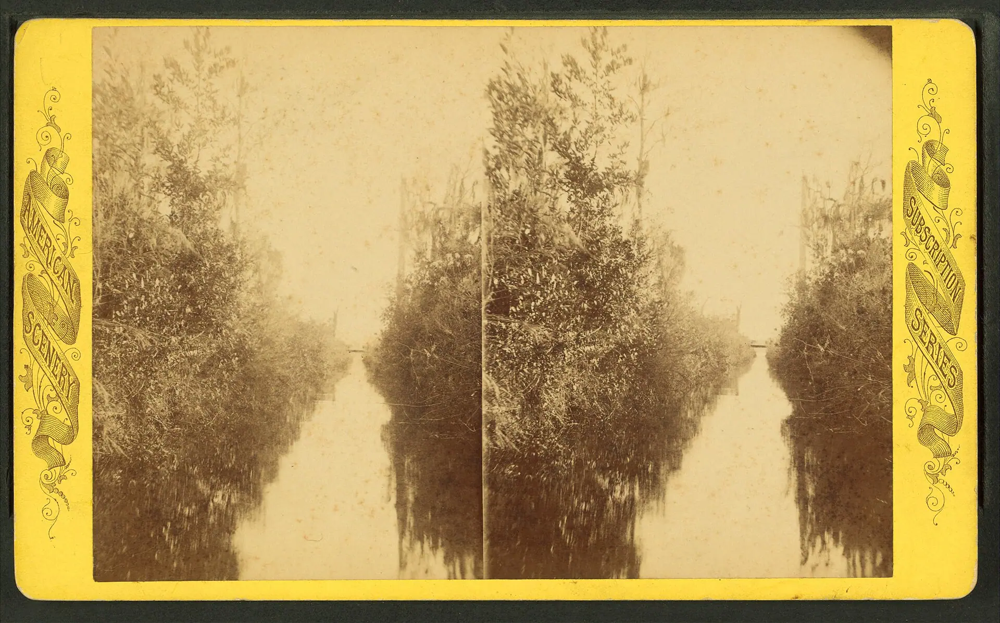

Winter Park Scenic Boat Tour
Running since 1938, the Winter Park Scenic Boat Tour loads a pontoon at the end of Morse Boulevard and drifts through the chain of lakes and the narrow, tree-shaded canals between them.

407 FYI · Winter Park Family Guide
407 FYI · A Family GuideWinter Park’s family register is the unhurried one: boats on the chain of lakes, storybook houses, gardens with room to roam, and a pizzeria at the end of the day. This page is the family cut of the district.
Every pick below carries the guide’s family tag in Winter Park. Each one opens its full card in the finder, with its address and details.
Winter Park's canal, in a historic stereoview. Photo: “Canal near Winter Park, Florida, from Robert N. Dennis collection of stereoscopic views” by Unknown artistUnknown artist, public domain, via Wikimedia Commons.
The Short Version
The anchor is the Winter Park Scenic Boat Tour, running since 1938: a pontoon out of Morse Boulevard that drifts through the chain of lakes and the narrow, tree-shaded canals between them while the skipper narrates the lakeside mansions and Rollins College from the water. It is the rare family plan that works for grandparents and small kids in the same hour, and it sets the tone for everything after: outside, unhurried, and nowhere near a turnstile.
The rest of the list keeps that pace on land. Casa Feliz, the storybook Spanish revival farmhouse on Park Avenue, and the Winter Park History Museum, telling the town’s story from its old railroad depot, give the day its stories. The Albin Polasek Museum pairs a sculptor’s historic home with serene lakeside gardens, and Mead Botanical Garden is the wild, shady one, boardwalks and a butterfly garden with room to roam. Boardwalk Pizza closes the day out, a Jersey shore pizzeria on Lake Howell Road where the whole family stays in the game.
The move: boat first, while everyone is fresh, then let the museums and gardens fill the middle of the day. Boarding is first come and sailings can fill, so the tour is the one stop worth arriving early for.
The Picks
The complete family list for the district, in the guide’s own order. Tap any name to open its own page.
Running since 1938, the Winter Park Scenic Boat Tour loads a pontoon at the end of Morse Boulevard and drifts through the chain of lakes and the narrow, tree-shaded canals between them.
Casa Feliz is a storybook Spanish revival farmhouse on Park Avenue, romantic and intimate, the kind of historic home guests say they could happily live in.
The Albin Polasek Museum pairs a sculptor's historic home with serene, lakeside sculpture gardens in Winter Park.
Mead Botanical Garden is Winter Park's wilder, shadier green space, peaceful and a little untamed.
The Winter Park History Museum tells the town's story from inside its historic railroad depot, a small, charming space run with obvious care.
Boardwalk Pizza brings a Jersey shore, old-school pizzeria feel to Lake Howell Road, with an open kitchen and a room guests describe as small-town and welcoming.
Before You Go
Keep Going
This page is one cut of the guide: family in Winter Park. The district story covers the neighborhood itself, and the finder carries every place in the guide with search, filters, and a map.